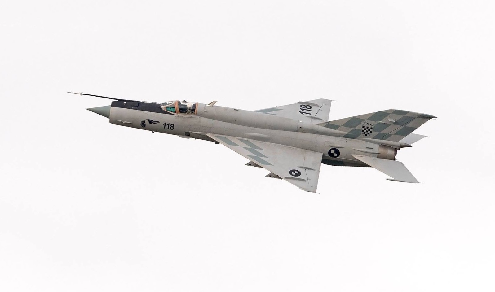
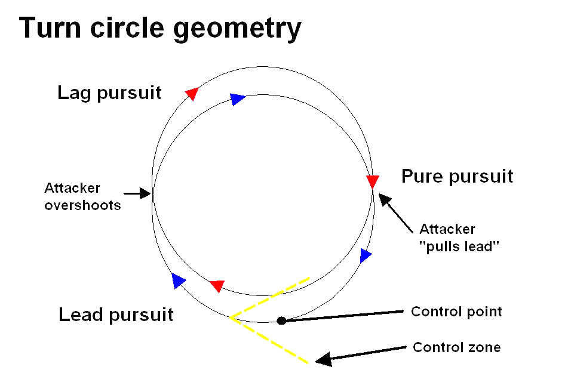
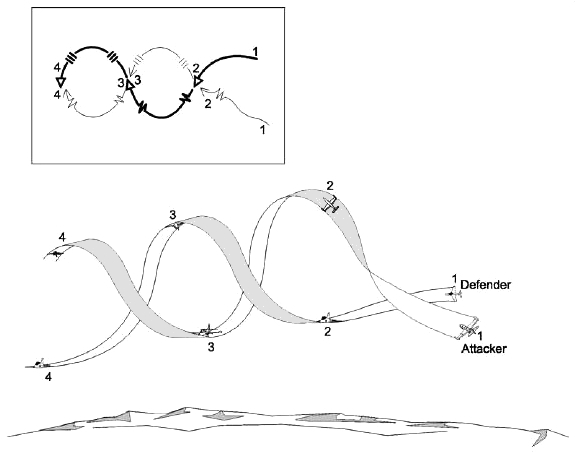

This webpage is a crash course on how to fly the Mikoyan-Gurevich MiG-21 fighter jet in flight simulators. Contents are as follows:
The Mikoyan-Gurevich MiG-21 is a supersonic interceptor aircraft designed in the Soviet Union in the 1950s. It was produced from 1959 to 1985 and at one point armed dozens of nations' militaries with some nations using it to this day. It saw major combat use in conflicts such as the Vietnam War, the Yom Kippur War, the Iran-Iraq War, and the Angolan Civil War. The aircraft is a favorite among aircraft enthusiasts and is represented in flight simulators such as Digital Combat Simulator and War Thunder The aircraft's versatility and, at times, complexity warrants a brief tutorial on how to get the most out of it. This tutorial will focus on the MiG-21Bis variant, one of the last variants to enter service.

When taking off:
When landing:
The MiG-21 was designed as an interceptor. The idea was that a ground controller would guide the plane towards a tagert (usually a bomber). The pilot would then destroy the target with missiles and return to this base. The idea of a prolonged maneuvering engagement or a dogfight was never part of this mission profile. Nevertheless, you may find yourself up against an opponent that both knows you're there, and wants to do something about it. In these cases, there are two main strategies: high speed dogfights and low speed dogfights
Turn as hard as you can while still keeping your speed in the neighborhood of 750-850 kmh. If you play your cards right, you'll sustain a turn of about 6g (6 times the Earth's gravity). Assuming your opponent's plane maintains speed worse than yours, your turn rate will be higher. Don't worry if they're still inside your turning circle, they're slowing down rapidly while you're keeping your speed high. Eventually, you will come around to their 6 o'clock (the position behind an aircraft is called their 6 o'clock or 6). Now's your chance to line up a careful shot with either your missiles or your gun. This entire strategy is known as a Rate Fight, because you're leveraging your turn rate (the time it takes for you to complete a circle) against your opponent.

If your opponent is staying hot on your heels, you can also try for a low speed dogfight. Pull hard on the stick, and roll either left or right. This will decrease your speed rapidly and hopefully force your opponent to fly past you. If they see this coming, they may try the same maneuver, resulting in a combined maneuver called rolling scissors. In the resulting fight, extend your flaps to 25 degrees if you're below 450 kmh (remember to retract them if you speed back up!), and keep your angle of attack below 30 degrees. (Your angle of attack is the vertical angle drawn between where your nose is pointed and where you're flying) If your opponent briefly flies past your nose during this maneuver, shoot them with your gun. Your missiles would be incapable of hitting them in such a hard maneuver. If your opponent straightens out, try to hit them with a missile. The longer range of a missile (~2.5 km at sea level) will help you hit an escaping foe.

If neither of these work, you could always try running away!
{kind=link}
{kind=link}
{kind=link}
{kind=link}